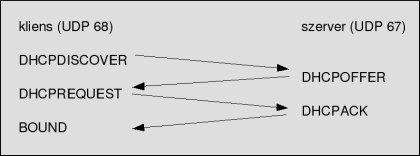

Osi Modell
Miként tud egy számítógép kommunikálni egy másik számítógéppel. ISO7498-ban lett definiálva.
7 Rétegből áll:
-
Fizikai réteg:
- Bitek hibamentes átvitele
- Kábelen vagy rádiós kapcsolaton kell továbbítani ( KOAX, Optikai )
-
Adatkapcsolati réteg:
- MAC-címzés
- Hibakeresés és kezelés
- Kapcsolók
- PPP, HDLC
-
Hálózati réteg:
- Szegmensekből csomag lesz
- Útvonal választá
- IP címzés ( IPv4, IPv6, ARP )
- Forgalomirányítás
-
Szállítási réteg:
- Szegmentálás, viszony rétegből érkező adatok kisebb adategységekre bontja,
szegmensekre. Minden szegmens tartalmaz egy forrást, célportszámot, illetve sorszámot
- Forgalom szabályozás, külső és fogadó közti megfelelő kommunikációs sebesség
- TCP/UDP
- TCP összeköttetés alapú / UDP összeköttetés mentes
- TCP nyugtáz / UDP nem nyugtáz
- TCP minden adatnak hiánytalanul megkell érkeznie, www, FTP, Email / UDP
streaming, TFTP, DNS
-
Viszony réteg:
- Kapcsolat felépítése
- Adatküldés és fogadás engedélyezése
- Logikai kapcsolat bontása és újraindítása
- NetBIOS, Winsock
-
Megjelenítési réteg:
- Adatot fogadja az alkalmazási rétegtől
- Számok és szövegek átalakítása kettes számrendszerbeli számokká
- Adattörmörítés ( veszteséges & veszteségmentes )
- Küldő adatai titkosítása és fogadó visszafejtése
- ASCII, JPG, GIF, MPEG
-
Alkalmazási réteg:
- Alkalmazások melyek használják a hálózatunkat ( böngészők, discord, steam ) Böngészők: http és https protokollok, valamint SMTP, POP3, IMAP, Telnet, FTP, SNMP és DHCP
- A réteg biztosítja, hogy a különböző hálózati szolgáltatások melyik protokoll segítségével legyen képes az együttműködésre
Ez fordítva zajlik le, amennyiben valaki fogadja az általunk küldött adatot.
DHCP
A DHCP (Dynamic Host Configuration Protocol) egy hálózati kommunikációs protokoll, amely automatikusan konfigurálja a hálózati eszközök IP-címét és más hálózati beállításait egy TCP/IP hálózaton belül. A DHCP szerverek IP-címeket és egyéb hálózati konfigurációs információkat osztanak ki a hálózati klienseknek, amikor azok csatlakoznak a hálózathoz vagy amikor azoknak lejár az aktuális IP-címük érvényességi ideje. A DHCP lehetővé teszi a dinamikus IP-cím-kezelést, ami hatékonyabb hálózati erőforrások kihasználását eredményezi, mivel a kliensek csak akkor kapnak IP-címet, amikor valóban szükség van rá. Emellett a DHCP segít megelőzni az IP-cím konfliktusokat és megkönnyíti a hálózati karbantartást.

Honfi Levente
Vissza